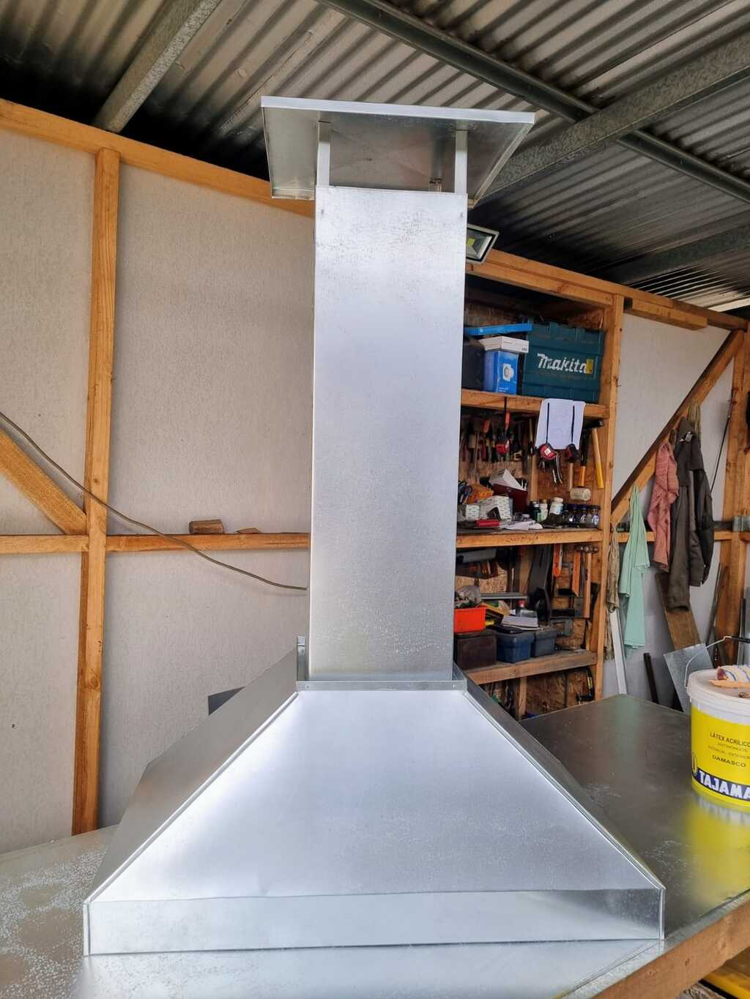
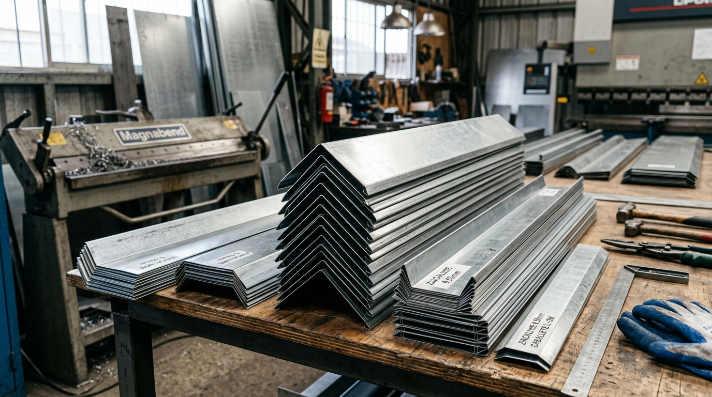
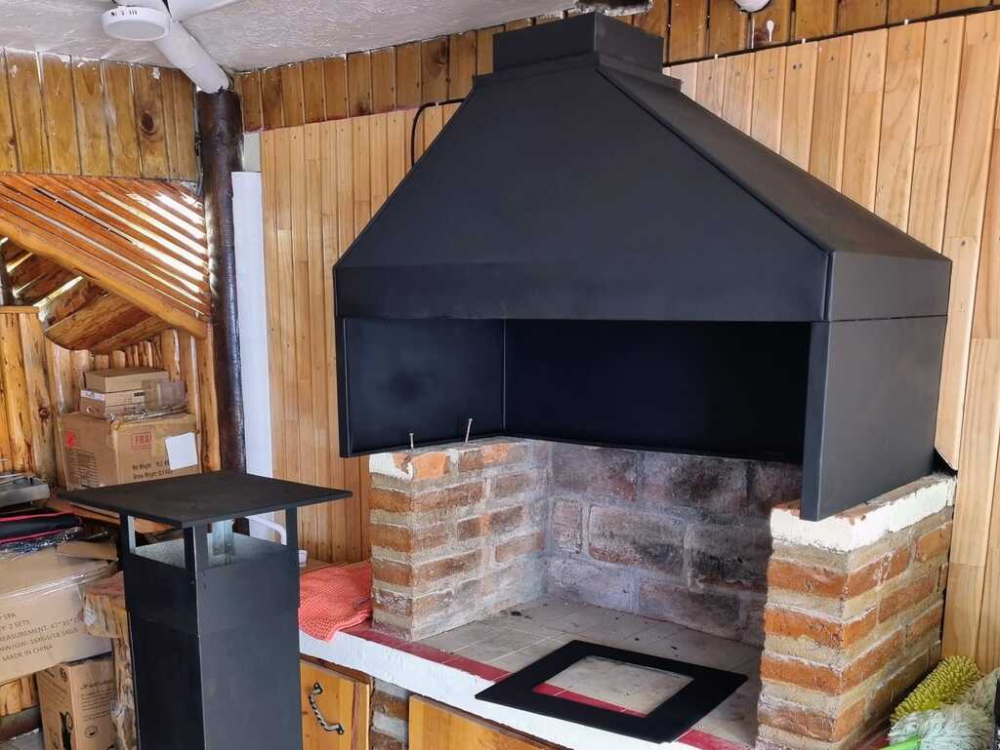
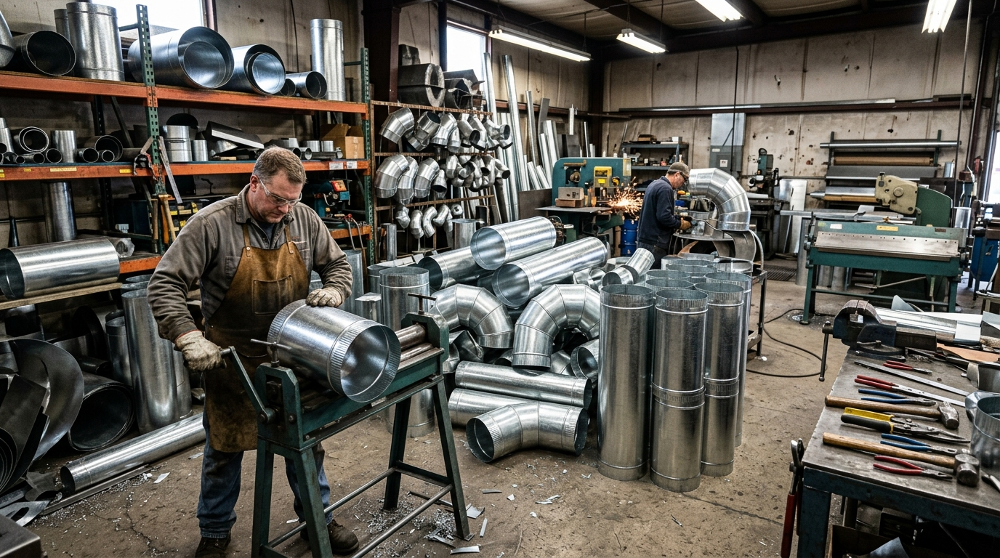
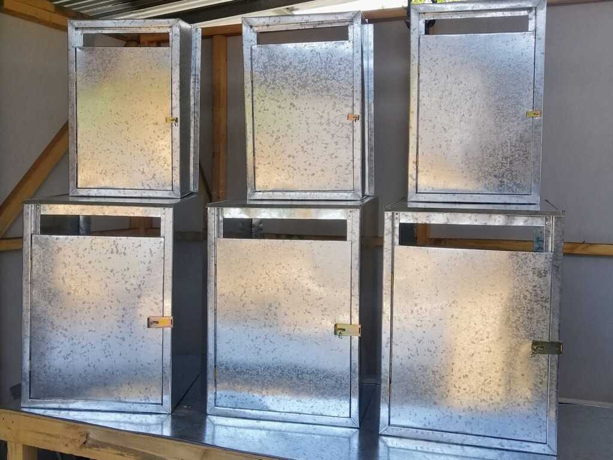
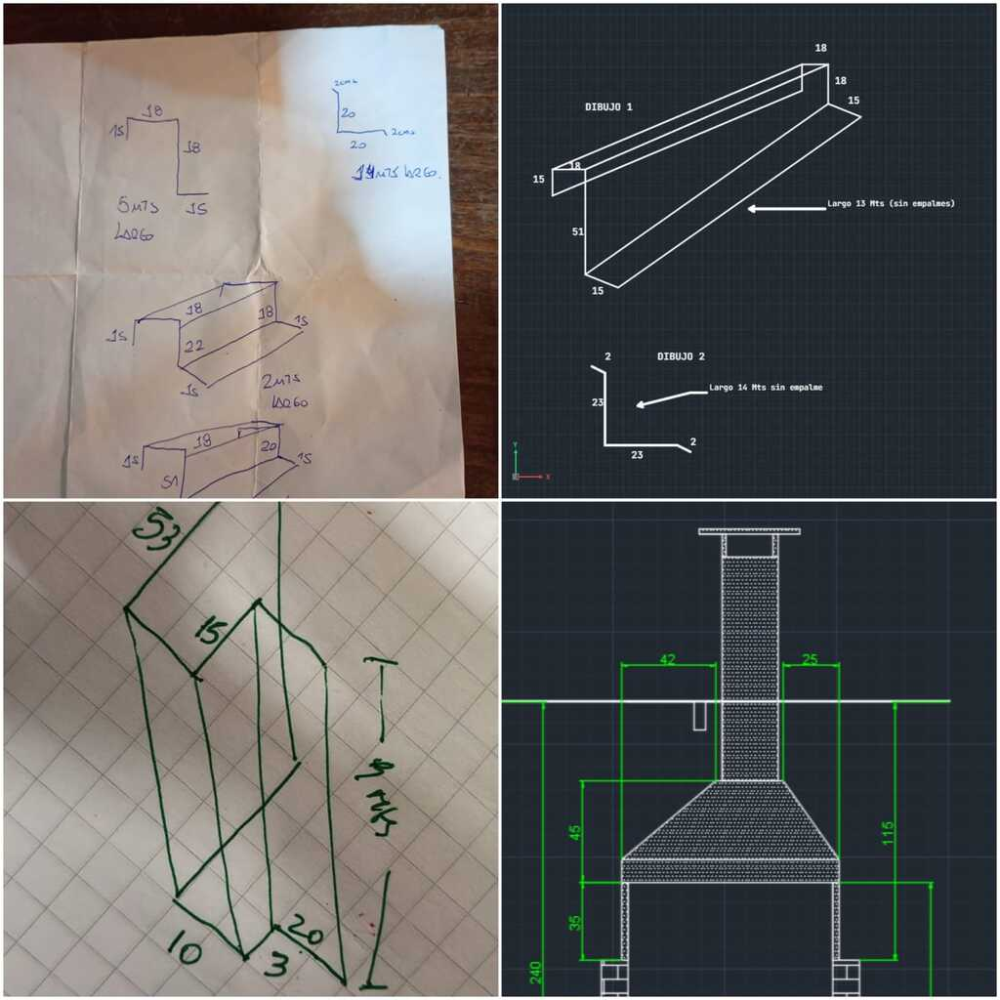
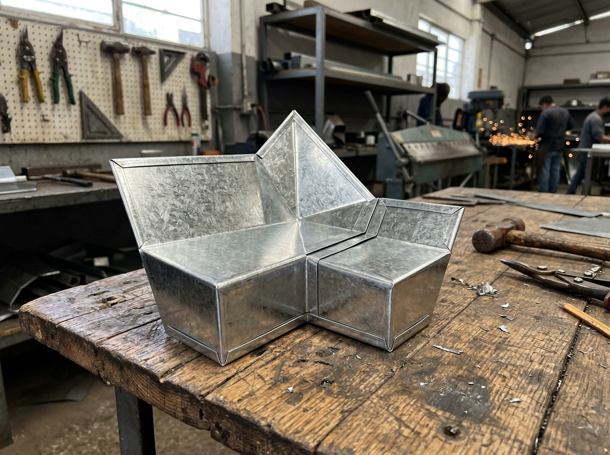

Fabricación y venta directa en taller para maestros, empresas y hogares del Litoral Central.

Usa este esquema para identificar las cotas principales que requerimos para la fabricación de tu campana de quincho a medida.
Solución definitiva contra filtraciones costeras por lluvia y viento en el Litoral. Fabricamos canaletas, caballetes, limahoyas, forros cortagoteras, coronaciones, forros especiales. Todo medida segun dibujo o muestra física.

Construcción robusta a escuadra perfecta. Geometría optimizada que garantizan una óptima evacuación de humos, calor y olores. Opción en Zinc natural brillante o Pintado Negro mate.

Ductería cilíndrica y rectangular en zinc galvanizado de alta resistencia, ideales para proyectos de aire acondicionado, renovación de aire y extracción de humos o gases de manera segura.

Desarrollamos cajas de protección para cilindros de gas GLP de 45 kg y 15 kg (cumplimiento de ventilación superior e inferior exigida por normativa SEC), protección de calefont, además de diseños personalizados según los requerimientos de espacio y seguridad de cada cliente.

No necesitas un plano de arquitecto profesional ni programas complejos. La gran mayoría de nuestros clientes son vecinos de la zona y maestros constructores con croquis a mano alzada.


Ubicados estratégicamente en Los Cerezos 053 (El Quisco), abastecemos rápidamente con piezas y cortes a medida a maestros instaladores y constructoras de Algarrobo, El Quisco, El Tabo y balnearios vecinos.